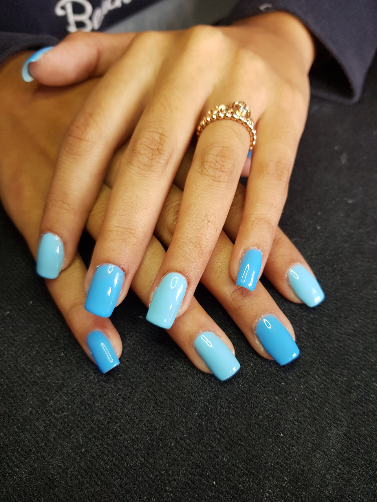
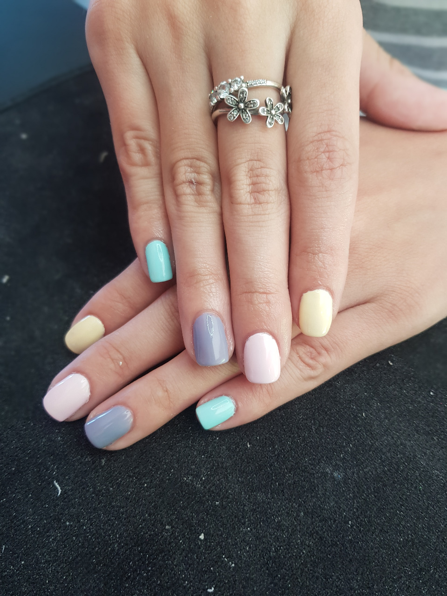
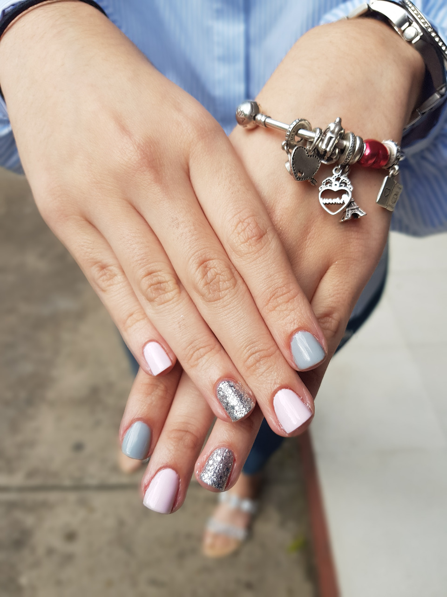
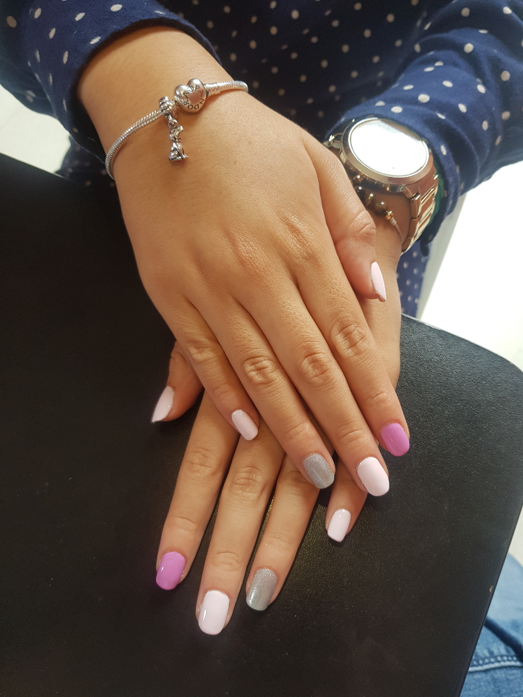
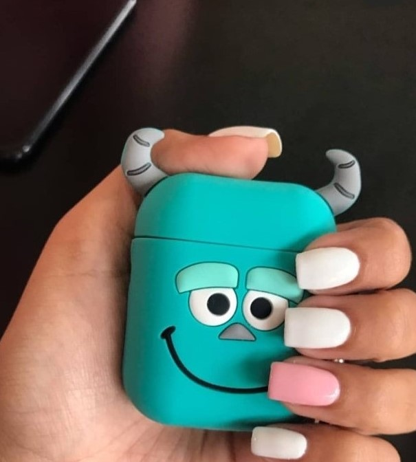

-
Blue bubble
Combinación de azules da una sensación de frescura y relajación. Es perfecta para el verano para combinar con un bikini y el mar.
Tonos: 002, 005.
-
Fiesta pastel
Combinación de esmaltes en tonalidades pastel. Gran tendencia 2019. Excelente combinación para chicas tiernas.
Tonos: 012, 129, 130, 132.
-
Glam Girl
Esta combinación de rosa pastel y gris hace una combinación elegante perfecta para una cita romántica o salida con amigas.
Tonos:004,130.
-
Pink girl
Esta combinacion de rosados es perfecta para todas esas mujeres que guardan a su niña interiror. El contraste platinado le da un toque de modernidad.
Tonos: 345, 610.
-
Shiny nude

Los tonos nude nuca pasan de modo. Estos tonos son perfectos para toda ocacion o para trabjados que necesiten seriedad. El toque de glitter hace que resalte la elegancia.
Tonos: 345, 610.
-
Ternura
El blanco es la mejor manera de representar la ternura y pureza que llevamos todas las mujeres al combinarlo con el rosa logramos un mayor impacto.
Tonos: 100, 128.
-
Has tu cita hoy